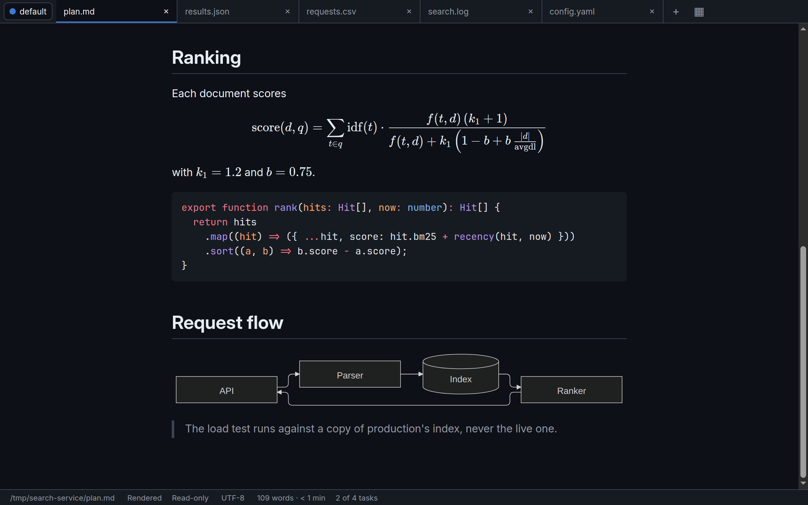
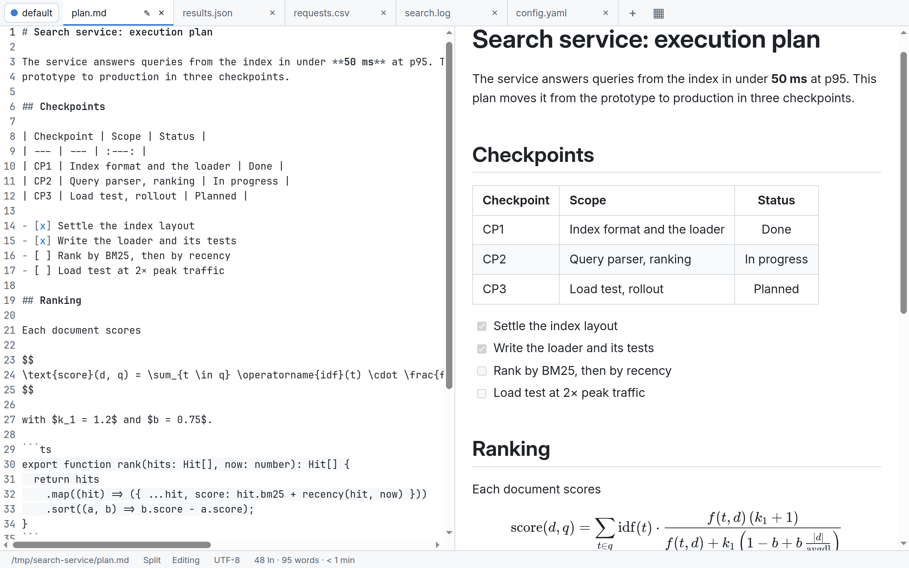
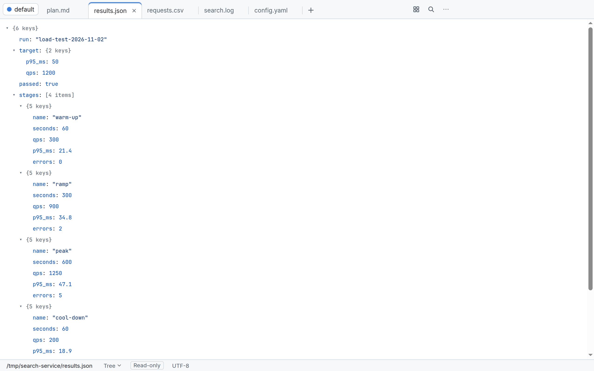
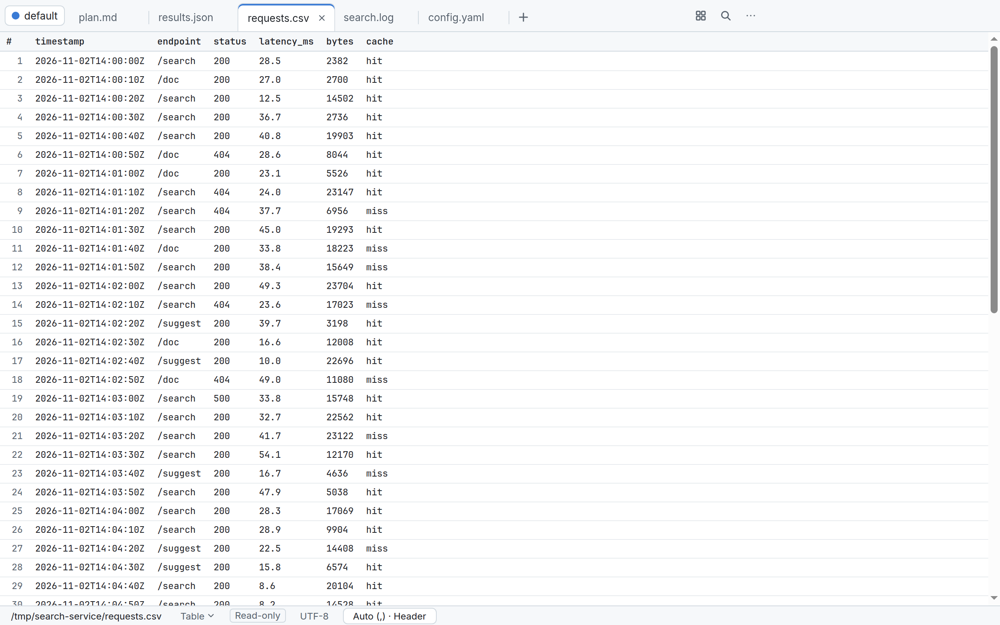
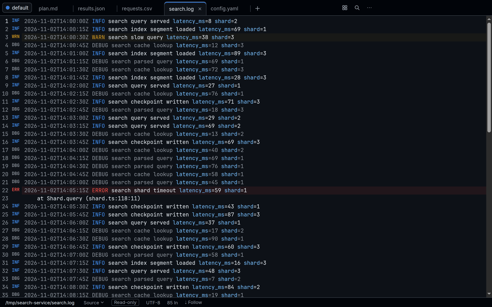
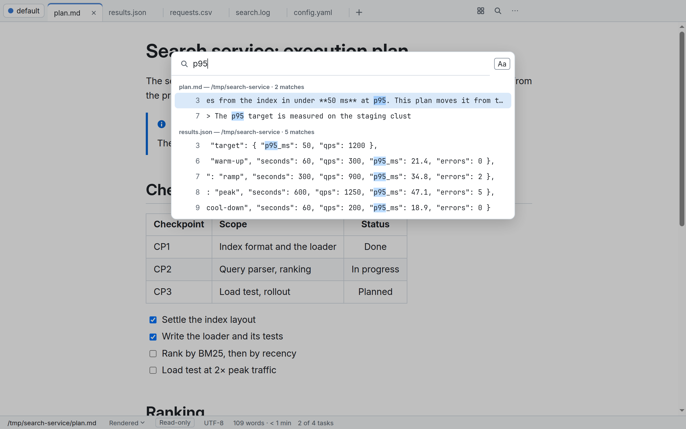
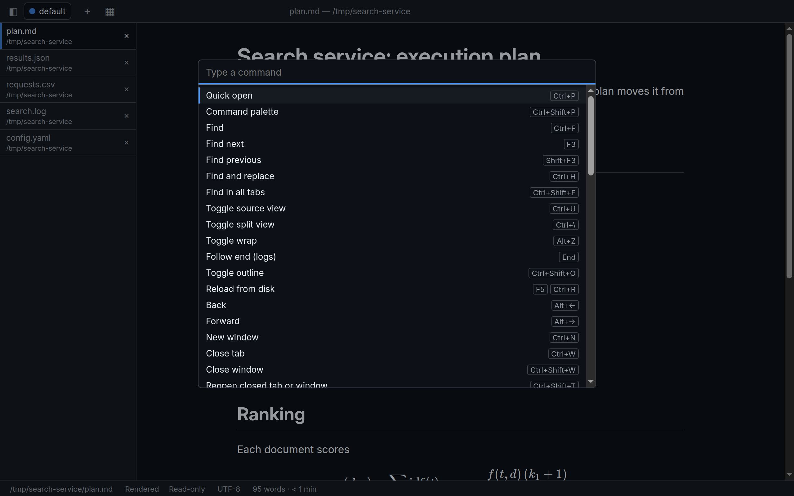

What it does







YAML, TOML, JSON Lines and source code open highlighted. MDX renders with nothing in it running.
Install
Ubuntu and Debian (apt)
Add galeo's apt repository and install it. apt upgrade then brings each release:
sudo curl -fsSLo /usr/share/keyrings/galeo-archive-keyring.asc https://swestash.github.io/galeo/apt/galeo.asc
sudo tee /etc/apt/sources.list.d/galeo.sources > /dev/null <<'EOF'
Types: deb
URIs: https://swestash.github.io/galeo/apt/
Suites: stable
Components: main
Architectures: amd64
Signed-By: /usr/share/keyrings/galeo-archive-keyring.asc
EOF
sudo apt update && sudo apt install galeo
galeo README.mdOn arm64, write Architectures: arm64. The key's fingerprint is
0240 8BDA 7C32 5856 C770 3ED4 716D B0EB 162F 5629.
Or download galeo_<version>_amd64.deb (or _arm64.deb) from the
latest release and run
sudo apt install ./galeo_*.deb.
This puts galeo and the shorter gal on your PATH and
adds galeo to Open With for Markdown, text, logs, data files and source code.
Other Linux distributions (AppImage)
Make galeo-<version>-<arch>.AppImage (x86_64 or
arm64) executable and run it. To get the
galeo command, use Settings → Install command-line launcher.
macOS and Windows (previews)
Releases also include builds for macOS (.dmg, .zip) and Windows
(setup and portable .exe), for x64 and Arm. They are tested in CI but unsigned
and unsupported, so Gatekeeper and SmartScreen warn the first time you start them.
Installing the previews
shows how to get past the warnings.
Every package has a SHA256SUMS entry and a GitHub artifact attestation:
checking a download.
Use it
galeo notes.md plan.md # open files in the last window used
galeo --new-window plan.md # in a new window
galeo --profile acme plan.md # in the "acme" profileYou can also double-click a file, drop it on a window, or use quick open. On macOS, use Cmd instead of Ctrl.
| Action | Keys |
|---|---|
| Quick open | Ctrl+P |
| Command palette | Ctrl+Shift+P |
| Edit mode | Ctrl+E |
| Split view | Ctrl+\ |
| Rendered or source view | Ctrl+U |
| Find / find in all tabs | Ctrl+F / Ctrl+Shift+F |
| Search tabs / tab overview | Ctrl+Shift+A / Ctrl+Shift+E |
| Outline | Ctrl+Shift+O |
| Settings | Ctrl+, |
The usage guide covers everything else.
Private by design
- No network. galeo makes no connections at all: no telemetry, no update checks, no remote images. A test proves it at the socket level.
- Documents can't run code. Rendered content is sanitized, scripts are blocked, and links to the web open in your browser only when you click them.
- Sandboxed. Chromium's sandbox is on, and every release is audited against a threat model.
This page follows the same rule: no scripts, no trackers, nothing loaded from anywhere else.